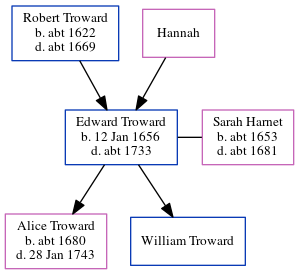

Edward Troward 1656 - c1733
[ Home ] | [ Calendar ] | [ Surnames Index ] | [ Errors ] | [ Family History ]The child of Robert Troward and Hannah, Edward Troward, the 7 times great-grandfather of Nigel Horne, was born in St Lawrence, Thanet, Kent, England on 12 Jan 16561, was baptised there on 11 Jun 1695 and also married Sarah Harnet (with whom he had 2 children: Alice and William) there on 16 Mar 16792.
He died c. 1733 and was buried in St Lawrence on 12 Dec 17333.
Parents
- Robert was born c. 1622
Children
- Alice was born c. 1680
Citations
- KFHS CD29
- Familysearch.org (www.familysearch.org)
- Kent, Canterbury Archdeaconry burials 1538-1988 - Findmypast
Media
England Marriages 1538-1973 - R_847896717
England Marriages 1538-1973 - R_848390298
England Births & Baptisms 1538-1975 - R_885327028
Kent, Canterbury Archdeaconry burials 1538-1988 - GBPRS/CANT/D/95266658
Kent, East Kent marriage index 1538-1754 Transcription - GBPRS-EASTKENT-MAR-148721-1
Kent Wills & Probate Indexes 1328-1890 Transcription - ORIGINS-KENTWILLS-9185
Family Tree
Map
Generated by ged2site. Last updated on Jul 3, 2024
Known Issues
Death date (abt 1733) has no citations
Date of death is known, but not place